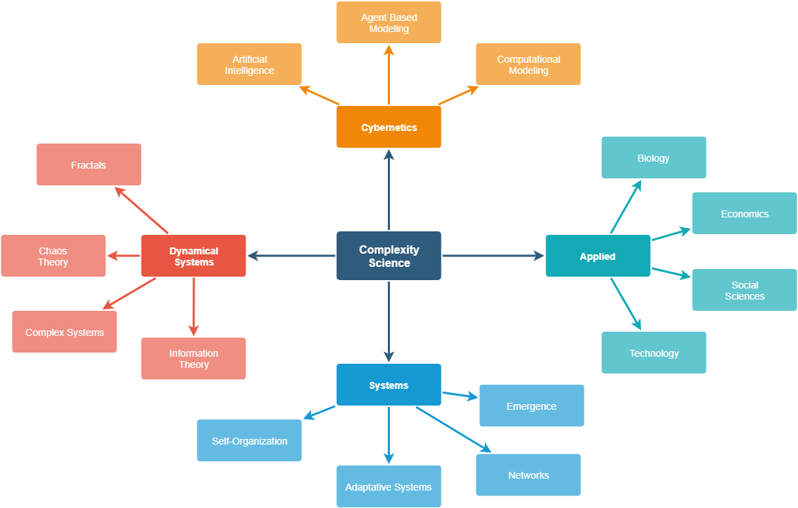

Econophysics
1. Econophysics and Chaos Resources: A Curated List from GitHub
Reproduced from GitHub https://github.com/
https://github.com/jepemo/awesome-complexity
A curated list of amazingly awesome Complexity Science resources, courses and shiny things inspired by the Complexity Explorer/Santa Fe Institute.
There are other sites with curated lists of resources about Complexity science which you can have a look at.
awesome-complexity 
A curated list of amazingly awesome Complexity Science resources, courses and shiny things inspired by the Complexity Explorer/Santa Fe Institute.
There are other sites with curated lists of resources about Complexity science which you can have a look at.
Concepts
Definitions
About complexity science, which is an interdisciplinary field—at the intersection of mathematics, computer science and natural science—that focuses on discrete models of physical systems. In particular, it focuses on complex systems, which are systems with many interacting components. - Think Complexity Book
Complexity characterises the behaviour of a system or model whose components interact in multiple ways and follow local rules, meaning there is no reasonable higher instruction to define the various possible interactions. - Wikipedia
Complexity theory is really a movement of the sciences. Standard sciences tend to see the world as mechanistic…The movement that started complexity looks in the other direction. It’s asking, how do things assemble themselves? How do patterns emerge from these interacting elements? Complexity is looking at interacting elements and asking how they form patterns and how the patterns unfold. - Wikiquote

{kind=link}
Simple Glossary
- Adaptive systems - System that has the ability to adapt to a changing environment.
- Agent Based Modeling - Alass of computational models for simulating the actions and interactions of autonomous agents (both individual or collective entities such as organizations or groups) with a view to assessing their effects on the system as a whole.
- Attractor - In the mathematical field of dynamical systems, an attractor is a set of numerical values toward which a system tends to evolve, for a wide variety of starting conditions of the system.
- Autopoiesis - The ability of a system to create and maintain itself
- Artificial intelligence - Intelligence demonstrated by machines.
- Chaos - Interdisciplinary theory stating that within the apparent randomness of chaotic complex systems, there are underlying patterns.
- Cybernetics - Transdisciplinary approach for exploring regulatory systems—their structures, constraints, and possibilities
- Complex Network - A Graph (network) with non-trivial topological features.
- Complex System - System composed of many components which may interact with each other.
- Developmental systems theory - Theoretical perspective (that emphasizes the shared contributions of genes) on biological development, heredity, and evolution.
- Dissipative system - A thermodynamically open system far from thermodynamic equilibrium.
- Edge of Chaos - A region of bounded instability (transition space) that engenders a constant dynamic interplay between order and disorder.
- Emergence - Condition of an entity having properties its parts do not have, due to interactions among the parts.
- Entropy - Measure of how many different microstates there are that could give rise to the macrostate that the system is in.
- Fractal - Subset of a Euclidean space for which the Hausdorff dimension strictly exceeds the topological dimension.
- Holon - System that is both a whole and a part.
- Information Theory - Field that studies the quantification, storage, and communication of information.
- Machine learning - Scientific study of algorithms and statistical models that computer systems use to effectively perform a specific task without using explicit instructions, relying on models and inference instead.
- Phase Transition - Transition between states of matter.
- Robustness - Ability to tolerate perturbations.
- Self-Organization - A process where some form of overall order arises from local interactions between parts of an initially disordered system.
- Simulation - Imitation of the operation of a real-world process or system.
- More definitions in the Complexity Explorer Page.
Books
Introduction
Complexity: A Guided Tour by Melanie Mitchell - Tour of the sciences of complexity, a broad set of efforts that seek to explain how large-scale complex, organized, and adaptive behavior can emerge from simple interactions among myriad individuals.
Think Complexity: Complexity Science and Computational Modeling by Allen Downey - Introduction to complexity where you’ll use graphs, cellular automata, and agent-based models to study topics in physics, biology, and economics, using Python as a programming language.
Vida artificial: del Caos al Orden (Spanish) by José Gabriel Segarra - Easy introduction to many concepts of complex systems.
Complexification: Explaining a Paradoxical World Through the Science of Surprise by John L. Casti
Complexity Science: The Warwick Masters Course by Robert S. MacKay - Introduction to the mathematical methods used to understand complexity, with plenty of examples and real-world applications.
Complexity: A Very Short Introduction by John Holland - Introduces the key elements and conceptual framework of complexity.
Diversity and Complexity by Scott Page - Introduction to the role of diversity in complex adaptive systems.
Introduction to Nonextensive Statistical Mechanics: Approaching a Complex World by C. Tsallis - A pedagogical introduction to the concepts of:nonlinear dynamics, extensivity of the nonadditive entropy, global correlations, generalization of the standard CLT’s, etc.
Introduction to the Modeling and Analysis of Complex Systems by Hiroki Sayama - Introduction to the Modeling and Analysis of Complex Systems.
Modeling Complex Systems by N. Boccara - This book illustrates how models of complex systems are built up and provides indispensable mathematical tools for studying their dynamics.
Simplicity in Complexity: An Introduction to Complex Systems by Rajesh R Parwani.
Thinking in Systems: A Primer by Donella Meadows - This book brings systems thinking out of the realm of computers and equations and into the tangible world, showing readers how to develop the systems-thinking skills that thought leaders across the globe consider critical for 21st-century life.
Understanding Complex Systems Springer Series - Promotes new strategies and paradigms for understanding and realizing applications of complex systems research in a wide variety of fields and endeavors.
Agent modeling and Artificial Life
Agent-Based and Individual-Based Modeling: A Practical Introduction by Steven F. Railsback and Volker Grimm - This book gives the skills to design, implement, and analyze agent-based models.
Agent-Based Models (Quantitative Applications in the Social Sciences) by Nigel Gilbert - This book reviews a range of examples of agent-based modeling, describes how to design and build your own models, and considers practical issues such as verification, validation, planning a modeling project, and how to structure a scholarly article reporting the results of agent-based modeling.
An Introduction to Agent-Based Modeling: Modeling Natural, Social, and Engineered Complex Systems with NetLogo by Uri Wilensky and William Rand - A comprehensive description of the core concepts, methods, and applications of ABM.
Agent-Based Models in Economics: A Toolkit by Domenico Delli Gatti - The book discuss the methodological bases of agent-based approaches and demonstrate step-by-step how to build, simulate and analyse ABMs and how to validate their outputs empirically using the data.
The Complexity of Cooperation: Agent-Based Models of Competition and Collaboration by Robert Axelrod - Introductory text on complexity theory and computer modeling in the social sciences.
Introduction to Artificial Life by Chris Adami - Theoretical groundwork for understanding the dynamics of systems of self-replicating information, as well as the results of initial experiments carried out with artificial living systems based on this paradigm.
Applied Complexity
Increasing Returns and Path Dependence in the Economy (Economics, Cognition, And Society) by W. Brian Arthur - Pioneering work on an important new approach to economics.
Cybernetic Laws of Social Progress: Toward a Critical Social Philosophy of Marxism (Systems science and world order library) by Arvid Aulin
Evolutionary Epistemology, Rationality, and the Sociology of Knowledge by Gerard Radnitzky, W. W. Bartley and Karl Popper - Fundamental ideas of evolutionary epistemology.
An Introduction to Models in the Social Sciences by Charles A. Lave and James G. March - Multidisciplinary introduction to model building in the social sciences.
Business Dynamics: Systems Thinking and Modeling for a Complex World by John D. Sterman John Sterman.
Complex Human Dynamics: From Mind to Societies by Andrzej Nowak, Katarzyna Winkowska-Nowak and David Brée - Research topics in these fields into the language of nonlinear, dynamic and complex systems.
From Matter to Life: Information and Causality by Sara Imari Walker, Paul C. W. Davies, George F. R. Ellis - This book addresses the role of information in life, and how it can make a difference to what we know about the world.
Growing Artificial Societies: Social Science from the Bottom Up by J. M. Epstein and R. L. Axtell
Introduction to Econophysics: Correlations and Complexity in Finance by R. N. Mantegna and H. E. Stanley - Statistical physics concepts such as stochastic dynamics, short- and long-range correlations, self-similarity and scaling, permit an understanding of the global behavior of economic systems.
Modeling Complex Systems for Public Policies by Roger White, Guy Engelen and Inge Uljee - This book describes the theory and practice of modeling the spatial dynamics of urban growth and transformation.
Signs of Life: How Complexity Pervades Biology by R. V. Solé and B. C. Goodwin - This book is an entirely new approach to understanding living systems and will help set the agenda for biology in the coming century.
The Theory of Evolution and Dynamical Systems: Mathematical Aspects of Selection by J. Hofbauer & K. Sigmund - Introduction to dynamical systems and its applications to evolutionary game theory, mathematical ecology, and population genetics.
Chaos and Fractals
Chaos: Making a New Science by James Gleick - Describes the Mandelbrot set, Julia sets, and Lorenz attractors without using complicated mathematics. It portrays the efforts of dozens of scientists whose separate work contributed to the developing field. The text remains in print and is widely used as an introduction to the topic for the mathematical layperson.
The Fractal Geometry of Nature by Benoit B. Mandelbrot - Definitive overview of the origins of fractal ideas and their new applications.
Chaos and Fractals: New Frontiers of Science by H. Peitgen, H. Jürgens and D. Saupe - This book covers the central ideas and concepts of chaos and fractals as well as many related topics.
Chaos and Fractals: An Elementary Introduction by D. P. Feldman - Elementary introduction to chaos and fractals.
Chaos and Time-series Analysis by J. C. Sprott - An introduction to developments in chaos and related topics in nonlinear dynamics.
Critical phenomena in natural sciences: Chaos, fractals, self-organization, and disorder by Didier Sornette.
Fractals and Chaos Simplified for the Life Sciences by L. S. Leibovitch - Explains the concepts of fractals and chaos and illustrates their uses with examples from biomedical research.
Visual Group Theory by Nathan Carter - This text approaches the learning of group theory visually.
Cybernetics and Computing
Cybernetics: Second Edition: Or the Control and Communication in the Animal and the Machine by Norbert Wiener - This book contains the first public usage of the term “cybernetics” to refer to self-regulating mechanisms.
An Introduction to Cybernetics by W. Ross Ashby - Another introduction to Cybernetics from 1956.
An Introduction to Genetic Algorithms by Melanie Mitchell - Introduction that describes some of the most interesting research in the field and also enables readers to implement and experiment with genetic algorithms on their own.
An Introduction to Kolmogorov Complexity and Its Applications by Ming Li and Paul M.B. Vitányi.
Introduction to the Theory of Computation by M. Sisper.
Introduction to the Theory of Neural Computation by J. A. Hertz, A. S. Krogh & R. G. Palmer - Introduction to the neural network models currently under intensive study for computational applications.
The Elements of Statistical Learning: Data Mining, Inference, and Prediction by T. Hastie, R. Tibshirani and J. Friedman - This book describes the important ideas in a variety of fields such as medicine, biology, finance, and marketing in a common conceptual framework.
The Nature of Code by Daniel Shiffman - This book focuses on a range of programming strategies and techniques behind computer simulations of natural systems, from elementary concepts in mathematics and physics to more advanced algorithms that enable sophisticated visual results.
The Nature of Computation by C. Moore & S. Mertens - Explanation of the field of computational complexity, starting with P and NP-completeness.
Dynamical Systems and Math
Dynamics of Complex Systems by Y. Bar-Yam - Descibes the modern unified study of complex systems.
Dynamics: The geometry of behavior by R. Abraham and C. D. Shaw - This book will supplement traditional nonlinear dynamics courses at advanced undergraduate level.
Game Theory: A Nontechnical Introduction by M. Davis - Accessible introduction to enormously important intellectual system with numerous applications to social, economic, political problems.
Mathematics of Complexity and Dynamical Systems by R. Meyers - Reference to the basic tools and concepts of complexity, systems theory, and dynamical systems from the perspective of pure and applied mathematics.
Nonlinear Dynamics and Chaos: With Applications to Physics, Biology, Chemistry, and Engineering by S. H. Strogatz - This textbook is aimed at newcomers to nonlinear dynamics and chaos, especially students taking a first course in the subject.
Principles of System Science by George E. Mobus and Michael C. Kalton - A comprehensive introduction to systems structure, function, and modeling as applied in all fields of science and engineering.
Statistical Mechanics: Entropy, Order Parameters and Complexity by J. P. Sethna.
Strategy: An Introduction to Game Theory by J. Watson - Comprehensive introductory game theory textbook, with applications to economics, political science, and social sciences.
The Nature of Mathematical Modeling by N. Gershenfeld.
Information Theory
An Introduction to Information Theory: Symbols, Signals and Noise by John R. Pierce - Updated version of the Shannon theory.
Information Theory: A Tutorial Introduction by James V Stone - Another introduction ideal for for novices who wish to learn the essential principles and applications of information theory.
Elements of Information Theory by T. M. Cover and J. A. Thomas - All the essential topics in information theory are covered in detail, including entropy, data compression, channel capacity, rate distortion, network information theory, and hypothesis testing.
Information Theory and Statistics by S. Kullback - Useful text studies logarithmic measures of information and their application to testing statistical hypotheses.
Networks
A First Course in Network Theory by Ernesto Estrada - Diverse nature of the study of complex networks by balancing the needs of students from very different backgrounds. It references the most commonly used concepts in network theory, provides examples of their applications in solving practical problems, and clear indications on how to analyse their results.
Complex Networks: Structure, Robustness, and Function by R. Cohen & S. Havlin - Presentation of the structure and function of complex networks, using a range of examples.
Network Science by Laszlo Barabasi - This book introduces network science to an interdisciplinary audience.
Networks, Crowds, and Markets by D. Easley and J. Kleinberg - This textbook takes an interdisciplinary look at economics, sociology, computing and information science, and applied mathematics to understand networks and behavior.
Networks: An Introduction by M. E. J. Newman - The book brings together for the first time the most important breakthroughs in each of these fields, mathematics, physics, computer and information sciences, biology, and the social sciences, and presents them in a coherent fashion, highlighting the strong interconnections between work in different areas.
Social and Economic Networks by M. O. Jackson - A comprehensive introduction to social and economic networks, drawing on the latest findings in economics, sociology, computer science, physics, and mathematics.
Self organization and emergence
How Nature Works: the science of self-organized criticality by Per Bak - Introduction to Complexity/Self-Organization with a lot of nature examples.
Ecodynamics: A New Theory of Societal Evolution by Kenneth E. Boulding - Exposition of how society evolves
The Hypercycle: A principle of natural self-organization by M. Eigen and Peter Schuster
Complex Adaptive Systems: An Introduction to Computational Models of Social Life by J. H. Miller & S. E. Page - Introduction to complex adaptive social systems.
Complex and Adaptive Dynamical Systems: A Primer by Claudius Gros - Introduction to the central concepts that form our modern understanding of complex and emergent behavior.
Self-organization in Biological Systems by S. Camazine, J-L, Deneubourg, N. R. Sneyd, G. Theraula and E. Bonabeau - This book introduces readers to the basic concepts and tools for studying self-organization and then examines numerous examples of self-organization in the natural world.
Self-organized Criticality: Emergent Complex Behavior in Physical and Biological Systems by Henrik Jensen - Introduction to the field of self-organized criticality, and contains an overview of the main research results.
The Emergence of Complexity by Jochen Fromm - This book is about how complexity suddenly appears and emerges in complex systems.
Articles and Papers
- Anderson P. W., K. J. Arrow, and D. Pines (Eds.). The Economy as an Evolving Complex System, Addison-Wesley, Redwood City CA, 1988
- Arthur, W. B.: Competing Technologies, Increasing Returns, and Lock-in by Historical Events, The Economic Journal 99: 1989, pp. 106-131.
- Arthur, W. B.: Positive Feedbacks in the Economy, Scientific American, February 1990, pp. 92-99.
- Arthur W. B.: Bounded Rationality and Inductive Behavior (the El Farol Problem), American Economic Review 84, pp. 406-411, 1994.
- Ashby W. R. Mechanisms of Intelligence: Writings of Ross Ashby, Intersystems, Salinas CA, 1981.
- Ashby, W. R. Design for a Brain - The Origin of Adaptive Behaviour. Chapman and Hall, London, 1960.
- Axelrod R. M. The Evolution of Cooperation, Basic Books, New York, 1984.
- Bak P. and Chen K.: Self-Organized Criticality, Scientific American: January 1991, pp. 46-53.
- Bennett C. H. Dissipation, Information, Computational Complexity and the Definition of Organization. Emerging Syntheses in Science, Pines D. (ed.), Addison-Wesley, Redwood City CA, 1985, pp. 215-233.
- Campbell, D. T. “Downward Causation” in Hierarchically Organized Biological Systems. Studies in the Philosophy of Biology, F.J. Ayala and T. Dobzhansky (eds), Macmillan, New York, 1974 .
- Crutchfield, J., Farmer, J.D., Packard, N., and Shaw, R.: Chaos, Scientific American, 255 (6): December 1986, pp. 46-57.
- Darwin C. The origin of species by means of natural selection or the preservation of favoured races in the struggle for life. (Edited with and introduction by J W Burrow). Penguin classics, 1985. (First published by John Murray, 1859)
- Dawkins R. The selfish gene, Oxford University Press, Oxford, 1989.
- Dawkins R. The Extended Phenotype: The Gene as a Unit of Selection, Oxford University Press, Oxford, 1983.
- Dawkins R. The Blind Watchmaker, Longman, London, 1986.
- Eigen M., and R. Winkler-Oswatitsch. Steps Toward Life: a perspective on evolution. Oxford University Press, New York, 1992.
- Fisher R. A. The Genetical Theory of Natural Selection, 2nd edition, Dover Publications, New York, 1958.
- Forrester, J. Industrial Dynamics, MIT Press, Cambridge, MA, 1961.
- Forrester, J. W. World Dynamics, Wright-Allen Press, Cambridge, MA, 1973.
- Gell-Mann, M., The Quark and the Jaguar: Adventures in the Simple and the Complex, W.H. Freeman, San Francisco, 1994.
- Gould S.J., and N. Eldredge. 1977: Punctuated equilibria: the tempo and mode of evolution reconsidered. Paleobiology 3, pp. 115-151.
- Haken H. Synergetics, Springer, Berlin, 1978.
- Holland J. H. 1992. Adaptation in Natural and Artificial Systems: An Introductory Analysis with Applications to Biology, - Control and Artificial Intelligence, MIT Press, Cambridge MA.
- Holland J.H. Hidden Order : How Adaptation Builds Complexity, Addison-Wesley 1996.
- Holland J. H., Holyoak K. J., Nisbett R. E. & Thagard P. R. 1986 Induction: Processes of Inference, Learning and - Discovery, MIT Press, Cambridge MA.
- Jantsch, E., The Self-Organizing Universe: Scientific and Human Implications of the Emerging Paradigm of Evolution, - Oxford, Pergamon Press, 1979.
- Kauffman S. A.: Antichaos and Adaptation, Scientific American: August 1991, pp. 78-84
- Kauffman S. A. The Origins of Order: Self-Organization and Selection in Evolution, Oxford University Press, New York, 1993
- Kauffman S. A. At Home in the Universe: The Search for Laws of Self-Organization and Complexity, Oxford University Press, Oxford, 1995.
- Langton C. G.: Computation at the Edge of Chaos: phase transitions and emergent computation, Physica D, 42, 1-3, pp. 12-37, 1990.
- Langton, C. G. (Ed.). Artificial Life: The Proceedings of an Interdisciplinary Workshop on the Synthesis and Simulation of Living Systems, Addison-Wesley, Redwood City CA, 1989.
- Langton, C. G., Taylor, C., Farmer, J.D., and Rasmussen, S. (Eds.). Artificial Life II: Proceedings of the Second Artificial Life Workshop, Addison-Wesley, Redwood City CA, 1992.
- Langton, C. G. (ed.), Artificial Life: An Overview, MIT Press, Cambridge, MA, 1995.
- Maruyama M.: The Second Cybernetics: Deviation-Amplifying Mutual Causal Processes, American Scientist 51, No. 2: 1963, pp. 164-179.
- Maturana H. R., & Varela F. J. The Tree of Knowledge: The Biological Roots of Understanding, (rev. ed.), Shambhala, Boston, 1992.
- Monod, J. Chance and Necessity, Collins, London, 1972.
- Nicolis, G, and Prigogine, I. Self-Organization in Non-Equilibrium Systems, Wiley, New York, 1977.
- Nicolis, G. and I. Prigogine. Exploring Complexity, Freeman, New York, 1989.
- Prigogine, I. and Stengers, I. Order Out of Chaos, Bantam Books, New York, 1984
- Prigogine, I. From Being to Becoming: Time and complexity in the physical sciences, Freeman, San Francisco, 1980.
- Ray, T. S. An Approach to the Synthesis of Life. Artificial Life II, C. G. Langton et al. (Eds.), Addison-Wesley, Redwood City CA, 1992, pp. 371-408.
- Shannon, C. E., and W. Weaver. The Mathematical Theory of Communication (5th ed.). University of Illinois Press, Chicago, 1963.
- Simon, H. A. The Sciences of the Artificial (3rd. edition) MIT Press, Cambridge MA, 1996.
- Thom, R. Structural Stability and Morphogenesis, Benjamin, Reading MA, 1975.
- Thompson, D. On Growth and Form, Cambridge University Press, Cambridge, 1917.
- Turing, Alan M. “On computable numbers, with an application to the Entscheidungsproblem.” Proceedings of the London mathematical society 2.1 (1937): 230-265.
- Varela, F., Principles of Biological Autonomy, North Holland, New York, 1979.
- Von Bertalanffy L. General Systems Theory (Revised Edition), George Braziller, New York, 1973.
- Von Foerster H. On self-organising systems and their environments. Self-Organising Systems, M.C. Yovits and S. Cameron (Eds.), Pergamon Press, London, 1960, pp. 30-50.
- Von Foerster H. and Zopf, G. (Eds.) Principles of Self-Organization, Pergamon, New York, 1962.
- Von Foerster H. Observing Systems: Selected papers of Heinz von Foerster. Intersystems, Seaside, CA, 1981.
- Von Foerster H. Cybernetics of Cybernetics. Future Systems, Minneapolis, 1996.
- Von Neumann J. Theory of Self-Reproducing Automata. (Ed. by A. W. Burks), Univ. of Illinois Press, Champaign, 1966.
- Waldrop M. M. Complexity: The Emerging Science at the Edge of Order and Chaos, Simon & Schuster, New York, 1992.
- Wolfram S. Cellular Automata and Complexity: Collected Papers, Addison-Wesley, Reading MA, 1994.
- Zeleny M. (Ed.) 1981, Autopoiesis: A Theory of Living Organization, North Holland, New York.
Courses and tutorials
Introduction to Complexity by the Complexity Explorer/Santa Fe Institute - In this course you’ll learn about the tools used by scientists to understand complex systems. The topics you’ll learn about include dynamics, chaos, fractals, information theory, self-organization, agent-based modeling, and networks.
Introduction to Information Theory by the Complexity Explorer/Santa Fe Institute - Introduces fundamental concepts in information theory. Information theory has made considerable impact in complex systems, and has in part co-evolved with complexity science.
Introduction to Computation Theory by the Complexity Explorer/Santa Fe Institute - Basic principles of computation and computational complexity.
Nonlinear Dynamics: Mathematical and Computational Approaches by the Complexity Explorer/Santa Fe Institute - Broad introduction to the field of nonlinear dynamics, focusing both on the mathematics and the computational tools that are so important in the study of chaotic systems.
Introduction to Dynamical Systems and Chaos by the Complexity Explorer/Santa Fe Institute - Introduction to the modern study of dynamical systems, the interdisciplinary field of applied mathematics that studies systems that change over time.
Fractals and Scaling by the Complexity Explorer/Santa Fe Institute - Overview of how ideas from fractals and scaling are used to study complex systems.
Algorithmic Information Dynamics: A Computational Approach to Causality and Living Systems From Networks to Cells by the Complexity Explorer/Santa Fe Institute - Introduction to concepts from the new field of Algorithm Information Dynamics to search for solutions to fundamental questions about causality.
Introduction to Agent-Based Modeling by the Complexity Explorer/Santa Fe Institute - Introduction to agent-based modeling to understand and examine a widely diverse and disparate set of complex problems.
The Mathematics of Complexity (BIO 131, Fall 2012) by the Stanford Complexity Group - Many videos about dynamic systems, chaos, fractals, etc.
Complexity science: an introducton by Udemy - Overview to the main areas of complexity science.
Systems Thinking Made Simple by Udemy - By the end of taking this course students should have gained a whole new perspective on the world call systems thinking and will have gained a understanding of the formal language of systems theory that can be used within a wide variety of applications.
Complex Adaptive Systems by Udemy - The aim of this course is to give you a solid grasp of the core concepts within the domain of complex adaptive systems theory.
Complex Systems Theory: An Introduction by Udemy - The aim of this course is to give you a solid grasp of the core concepts within the domain of complex systems theory.
Systems Thinking: Essential Concepts by Udemy - You will be able to better think in systems and communicate more effectively using the vocabulary of systems theory.
Understanding The Process of Emergence by Udemy - By the end of this course students will have a solid grasp of the core concepts within emergence theory and will be able to apply them within their specific domain.
Chaos Complexity and Emergence by Udemy.
Nonlinear Systems & Chaos: An Introduction by Udemy - By the end of taking this course students will have a solid grasp of the phenomena and origins of nonlinearity and the basic concepts required to begin a more indepth and mathematical understanding of the subject.
Game Theory: How Cooperation and Competition Work by Udemy - By the end of this course you will be able to understand and use the formal models of game theory to interpret situations of both cooperation and competition.
Other
- Map of Complex systems History - An impressive overview of the evolution of complex systems thinking.
- List of complexity papers
- Real time 3D strange attractors scout and hypercomplex fractals(src)
- Interactive Lorenz Attractor
- Interactive Mandelbrot Set
- System - free, open, and living public resource that aims to explain how anything in the world is connected to everything else.